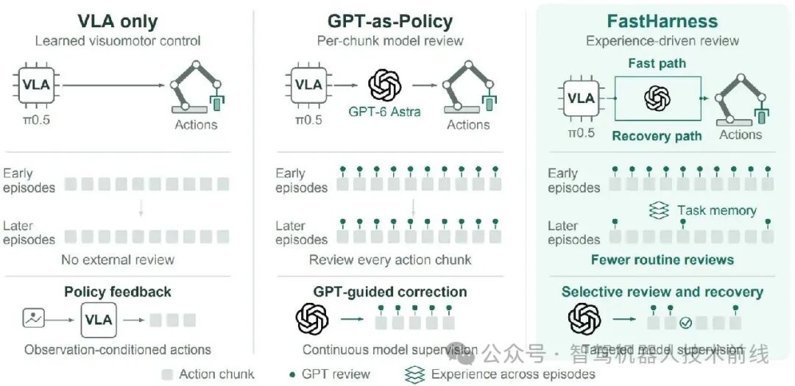
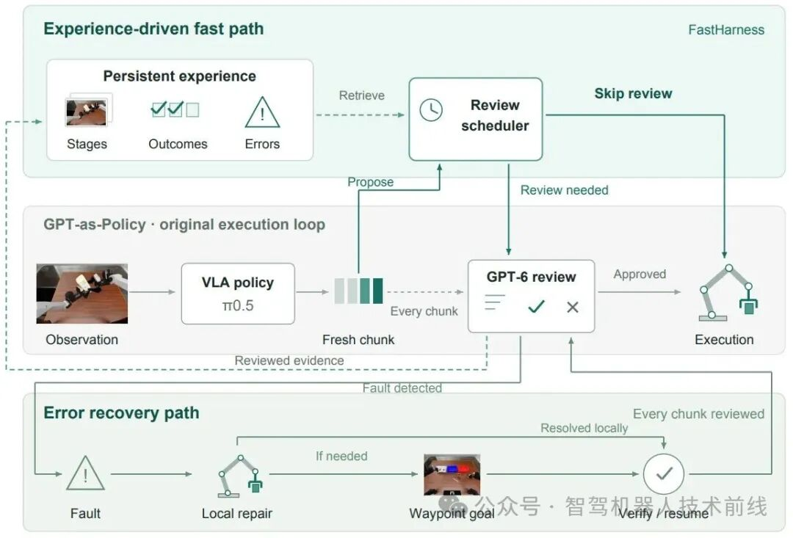
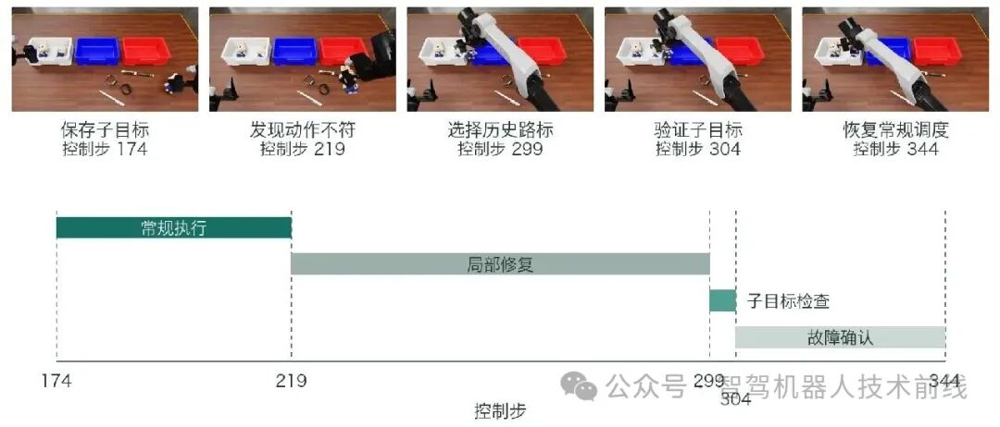
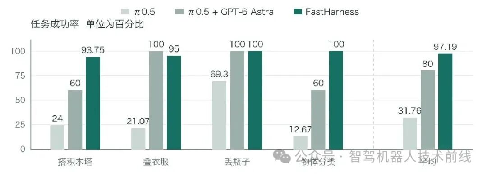
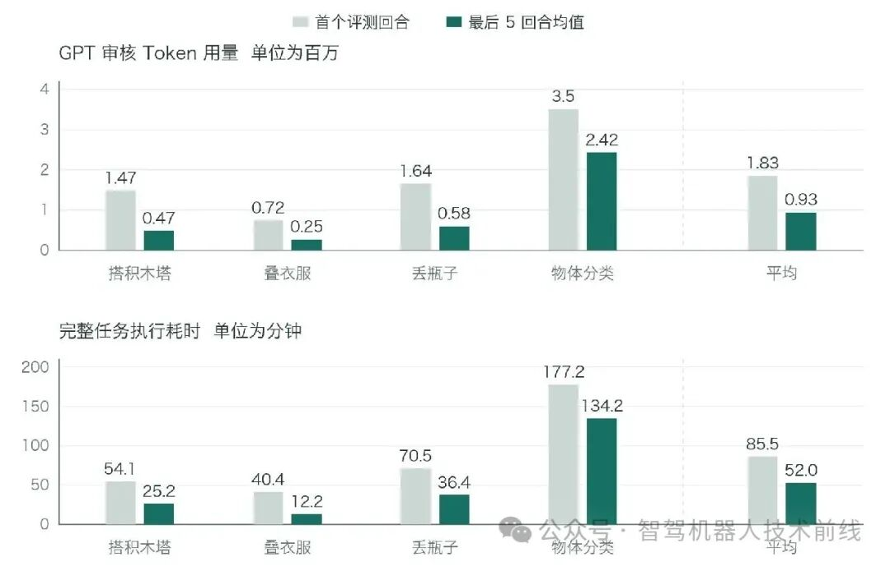
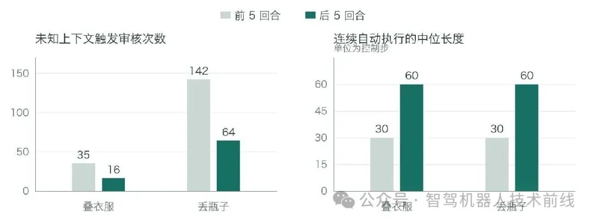

只靠动作策略
π₀.₅ 看当前观测和指令，生成动作块。执行后获取新观测，再生成下一块。
观察 → 提议 → 执行 ↺
缺少额外的大模型检查与纠正。跳过这次大模型审核
ZERO REVIEW CALL检查、修正并验证
REVIEW & RECOVER以上均为原文报告，未独立复现 RoboDojo 性能。基线来自另一份报告；不同来源的版本差异见 证据边界。
把机器人想成一个熟练工，VLA 是操作能力，大模型是检查员；Harness 则决定何时请检查员介入，以及出错后怎样组织纠正。
π₀.₅ 看当前观测和指令，生成动作块。执行后获取新观测，再生成下一块。
在每个短动作段之间调用审核模型。持续监督有效，也持续产生响应等待与 Token 开销。
把已验证的阶段经验用于判断是否审核。陌生、风险高或曾失败的情形，重新增加监督。
每个动作块前仍获取新观测、调用 VLA 生成新动作。复用的是审核经验；上一块未执行的动作尾段会被丢弃。大模型少参与，并不意味着机器人闭眼回放旧轨迹。
这里可以把“策略 + 审核模型 + 记忆 + 调度 + 执行后端”整体看成机器人 Agent。FastHarness 的核心贡献落在 Harness：决定何时审核、怎样记经验、怎样进入和退出恢复。
术语并没有唯一的行业边界。此处按这个项目的职责划分解释，不能简单把 Agent 等同于某一个大模型。

阶段标签来自审核，当前状态与记忆样例匹配。可靠性证据越充足，允许的审核间隔越大；强制审核条件始终拥有更高优先级。
基础调度使用 Wilson 形式的保守分数 L，把成功比例和证据数量一起考虑。成功经验增加时，允许间隔逐渐增大；发生错误后，还要满足连续成功的冷却条件。
右侧按代码默认 max_interval = 6、confidence_cap = 1 计算，用输入值作为有效计数。实际计数可衰减，且有选择性审核和相关样本，L 不能解释为经过证明的 95% 安全保证。公式给出调度间隔参数，实际调用还取决于计数位置和其他触发条件。
默认还包括最少 4 个已确认结果、错误后 3 次连续成功、最多 60 个连续未审核控制步、5% 随机抽查；当前代码另有接触检查、延长子任务执行跨度等可选开关。默认值并不等同于原文实验配置。

审核发现执行错误或下一步意图不符后，系统进入恢复路径：逐块检查，先做局部纠正，必要时借助本回合早先验证过的子目标。
从当前状态重新靠近、抓取或调整，保留仍然有效的进展。
找出此前完成且当前仍可达的子目标，检查哪些进展还在。
继续监督，直到本次故障真正消除，才回到常规调度。
“两个兔子已经放入白色篮子”是一个经过确认的子目标。选择这个路标不会把机器人、物体或时间重置到过去，也不会回放旧动作；如果物体已经掉出工作区，历史状态不能凭记录自动恢复。

以下图表统一使用你提供的微信文章：四个模拟任务，多回合共享任务经验，场景布局会变化。成功率与效率比较使用不同的对照。
四任务分别为 15/16、19/20、20/20、9/9。文章先计算每个任务的成功率再等权平均，得到 97.1875%。如果把回合合并，则为 63/65 ≈ 96.92%。
叠衣服为 95%，低于引用基线的 100%。平均提升不意味着每个任务都提升；9/9 也不是对未来成功率的保证。
57.2%：先分别算四任务的下降百分比，再平均。约 49.2%：先加总四任务的 Token，再计算总量降幅。后者给 Token 大户更高权重。
效率对比是 FastHarness 的首回合与末五回合均值；不能直接写成“比 GPT-as-Policy 省 57.2%”。Token 用量也不直接等于账单金额。
前五回合与后五回合比较；触发次数按各五回合窗口汇总。两任务自动执行长度均相当于 2 → 4 个动作块。
文章对这两项任务全序列的时间分析；交互时间包含请求处理、等待及重试。不能外推为所有机器人系统都具有相同瓶颈。



核对公开仓库固定版本 dfe070f。以下是实际代码摘录与解读，默认参数和可选分支不应直接视为文章实验的精确配置。
官方 demo 六轮结果与 README 一致。基线和自适应两种模式均为 6/6 完成；这个玩具任务不使用 GPU、真实 VLA 或大模型 API，验证的是调度逻辑。
这里的第一轮自适应调用是 26 次，demo 未设置 live 的 episode_number=1 强制审核条件，因此不能套用官网“首轮零跳过”的评测描述。
本机 Python 3.13 测试：196 项中 190 项通过、5 项跳过、1 项报错。报错测试依赖 Linux 的 /proc/self/stat，macOS 不提供该文件。未运行 RoboDojo 或复现原文性能。代码摘录遵循项目 MIT 许可。
两者都说明：完整 Agent 的表现，也取决于模型之外的执行循环。具体优化的对象和对记忆的处理方式有所不同。
| 维度 | MOON | FastHarness |
|---|---|---|
| 任务 | 视觉语言导航 | 机器人操作 |
| 核心问题 | 偏航后，历史可能让错误自我延续 | 熟悉阶段逐块审核，产生重复开销 |
| 关键决策 | 何时告警、清空视觉历史并切换恢复策略 | 何时审核、何时走快路径、何时恢复 |
| 记忆的作用 | 偏航时清理可能误导策略的视觉历史 | 跨回合保留阶段经验；本回合保留已验证子目标 |
| 学习组件 | 学习得到的 Judge 与恢复适配器 | 文章框架不额外训练模型，依赖经验统计与调度 |
| Harness 的工作 | 组织监测、记忆切换和策略调用 | 组织审核、执行、记忆更新和恢复验证 |
一次偏航后，可以清理当前决策中误导性的历史，同时把这次失败写入长期经验，以便未来更早审核。“忘掉什么”和“记住什么”针对的是不同用途的记忆。
一个可检验的方向，是根据可见性、身份歧义、遮挡与历史失误来调度昂贵的语义检查；同时维持频繁的观测和低成本运动检查。高可信的常规段降低大模型调用，丢失目标或风险上升时提高审核密度。
需要对比同一策略、相同回合和预算下的三组系统：逐块审核、固定间隔审核、经验自适应审核。除成功率和延迟，还应报告错误发现延迟、碰撞、身份切换和恢复失败。本文没有证明这种迁移有效。
可确认的贡献是把经验用于审核调度，并显式组织恢复流程。系统性收益与安全性，还需要更完整的匹配对照和实验日志来判断。
80% 基线引用 GPT-as-Policy 报告。任务名称相同，仍不自动代表相同 seed、模型版本、预算和运行条件。17.19 个百分点是文中数值差，不能单独证明全部收益来自调度。
四任务共 65 回合，各任务分母不同；其中分类只有 9 回合。文章提供平均值与案例，尚不足以说明大规模分布外任务的稳定表现。
默认状态匹配使用三视角 8×8 RGB 与机器人状态的低成本特征，非语义视觉编码器。背景相近、物体细小或抓手遮挡可能误匹配；告警缺席不能记为成功。
冷启动到熟悉回合的改善，与跨回合记忆有关。还需要固定间隔、去记忆、去恢复等匹配消融，衡量各模块收益以及适应新布局的能力。
| 核对点 | 发现与本页处理 |
|---|---|
| 任务与效率口径 | 微信文章报告四任务和平均 Token 降幅 57.2%；官网效率图使用含叠碗的四任务、成功率图使用五任务，文字称约下降三分之二到四分之三。本页主结果只采用微信文章。 |
| 经验是否衰减 | 官网描述“不衰减的纯积累”；DESIGN 与 Memory 默认值为 decay=0.98。不同配置会改变调度行为，不能混写为统一默认。 |
| 恢复预算耗尽 | 官网描述结束回合；当前 engine.py 会进入 recovery_exhausted_passthrough，未经审核执行新 VLA 提议，直到后端原生终止。这一分支可能影响恢复与成本统计。 |
| 预算默认值 | DESIGN 写恢复总预算默认 64 块，当前 Config 为 24 块。可选调度开关还会改变未审核步数上限；复现必须冻结实际配置。 |
| 论文状态 | 文章给出论文标题和项目链接；本次读取的官方首页、README 未提供独立论文 PDF / arXiv 编号或发表信息。本页按公开项目与文章解读，不推断同行评审状态。 |
主结果据微信原文；方法细节据公开代码与设计说明。原图和视频归原作者所有。本页为独立中文解读，不是 FastHarness 官方网站。